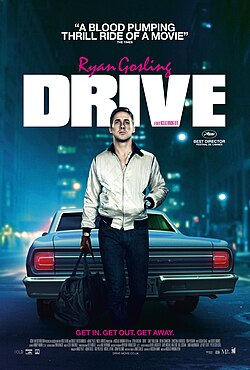

Драйв

Drive
«Драйв» (англ. Drive) — американский криминальный нео-нуарный триллер[3][4][5] с элементами боевика[6][7][8] датского режиссёра Николаса Виндинга Рефна с Райаном Гослингом в главной роли.
Картина снята по одноимённому роману Джеймса Сэллиса, сценарий был написан Хуссейном Амини.
Фильм является победителем Каннского кинофестиваля 2011 года в номинации «Лучшая режиссура»[9].
В США фильм вышел в прокат 16 сентября 2011 года, в России — 3 ноября[10].